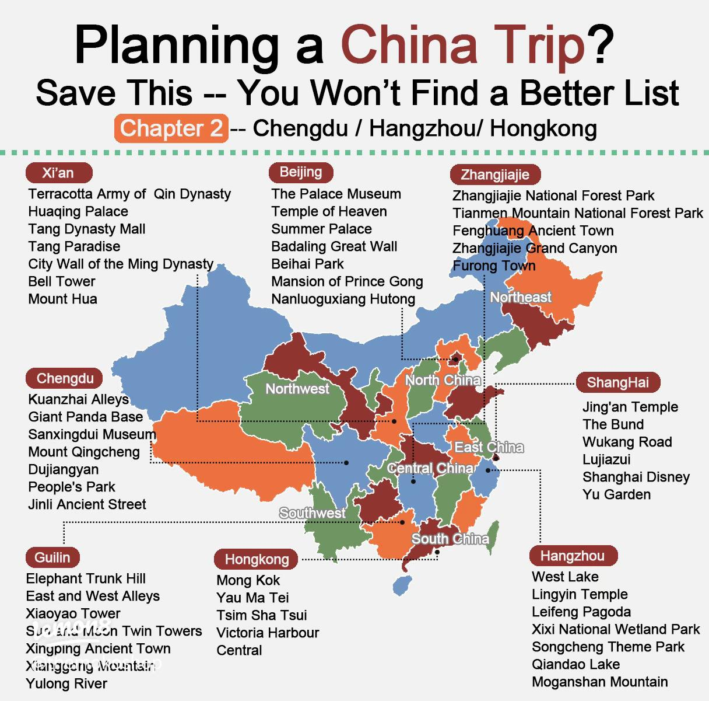
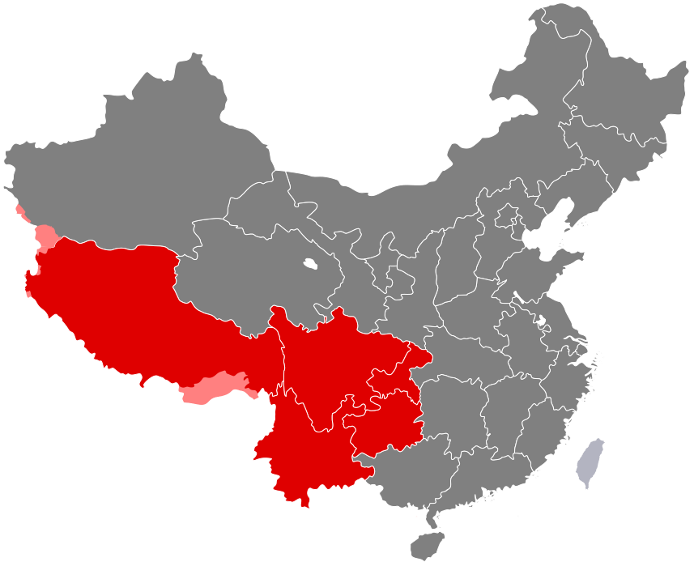
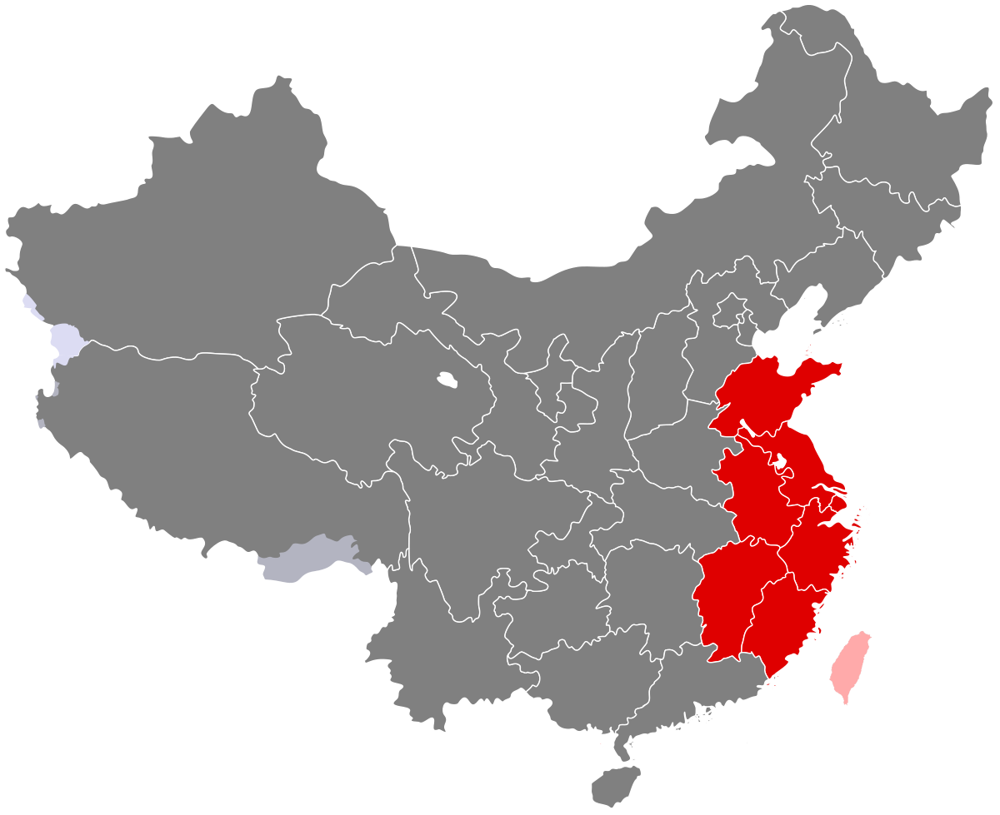
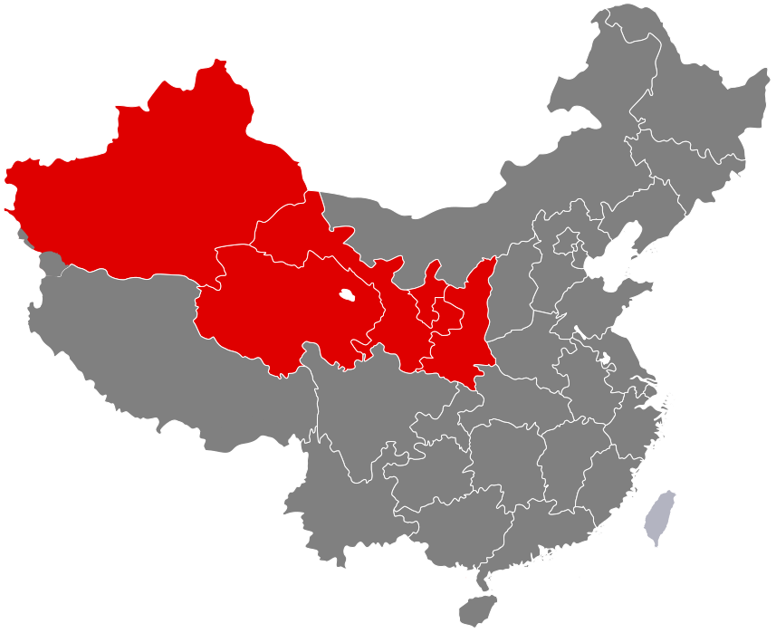
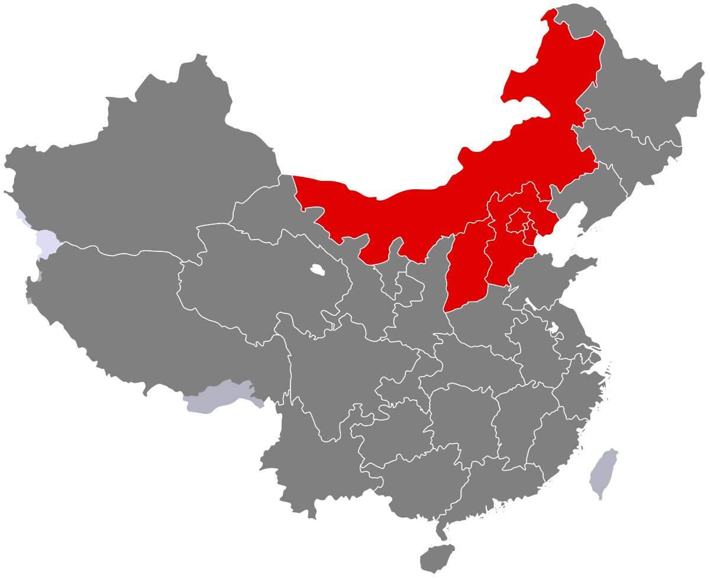
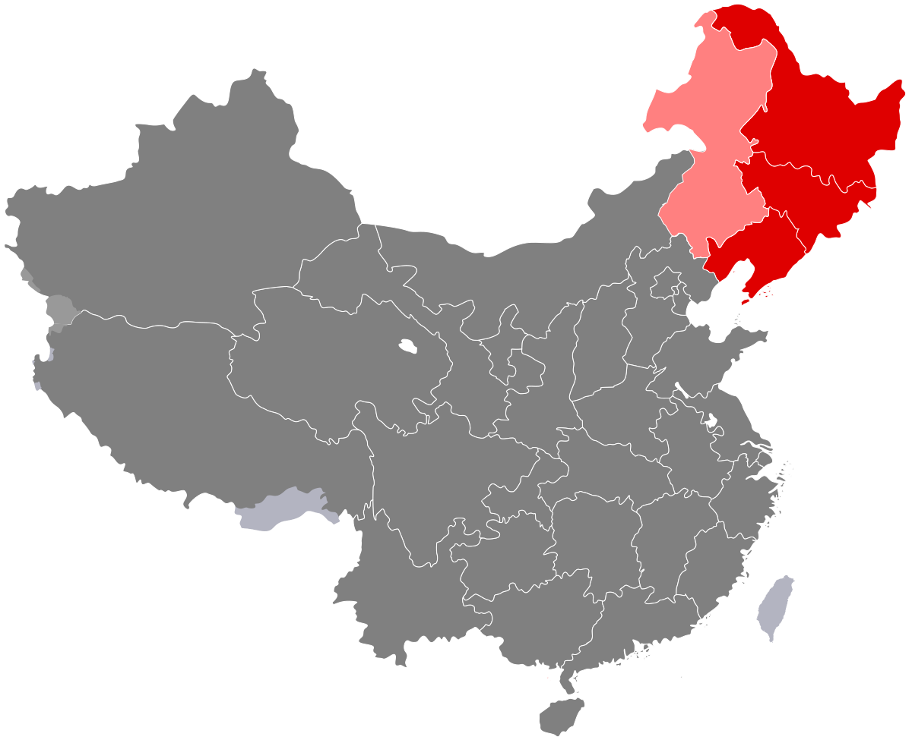
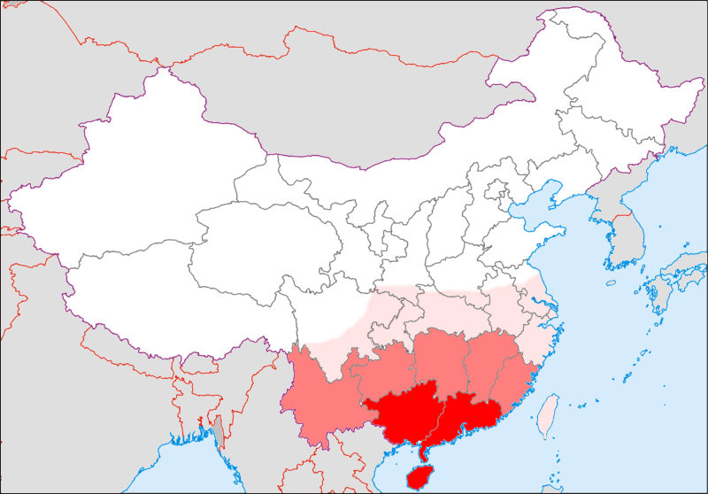

Mainland China is huge—so the best time to visit depends on where you want to go and what you want to do. A winter trip to Harbin (for ice sculptures) is amazing, but a summer trip there would be too cold! This guide breaks down the seasons, the best regions to visit each time, and sample 5-day/10-day itineraries to inspire you.
Mainland China has 4 distinct seasons, but weather varies a lot by region (north vs. south, east vs. west). Here’s a quick overview:
Mild temperatures (10°C-20°C / 50°F-68°F), blooming flowers, and less rain. Great for most regions, but northern China can have sandstorms (rare, but check the forecast).
Hot and humid in the south (25°C-35°C / 77°F-95°F) with rain; milder in the north and west (20°C-30°C / 68°F-86°F). Good for mountain regions (like Tibet) but avoid southern cities (e.g., Guangzhou) if you hate humidity.
Cool, dry, and sunny—many travelers say this is the best season! Temperatures are 15°C-25°C (59°F-77°F), and leaves turn red/gold in northern regions.
Cold in the north (-10°C-5°C / 14°F-41°F) with snow; mild in the south (10°C-20°C / 50°F-68°F). Perfect for winter sports or ice festivals in the north.

• Southwest China (Sichuan, Yunnan): Pandas in Chengdu are active, and Yunnan’s cherry blossoms (in Kunming) and rapeseed flowers (in Luoping) are in full bloom. The weather is warm, not too hot—great for hiking in Lijiang.

• East China (Hangzhou, Suzhou): West Lake in Hangzhou has blooming peach blossoms, and Suzhou’s gardens are lush. Spring rain makes these water towns feel like a painting.

• Northwest China (Qinghai, Xinjiang): Qinghai Lake’s canola flowers turn golden, and Xinjiang’s grasslands (like Naadam Grassland) are green. Temperatures are mild (20°C-28°C / 68°F-82°F)—perfect for avoiding the south’s humidity.

• North China (Beijing, Xi’an): The Great Wall has clear skies, and Beijing’s Fragrant Hills Park has red leaves. Xi’an’s weather is cool—ideal for visiting the Terracotta Army (no summer crowds!).

• Northeast China (Jilin): Autumn leaves in Jilin’s Jingpo Lake are stunning, and the weather is crisp (10°C-20°C / 50°F-68°F).

• South China (Hainan, Guangzhou): Hainan’s beaches are warm (20°C-25°C / 68°F-77°F)—escape the cold and relax by the sea. Guangzhou’s winter is mild, great for eating dim sum outdoors.
1. Day 1-3: Beijing: Visit the Great Wall (Mutianyu section, less crowded), Forbidden City, and Tiananmen Square. Spend an evening in a hutong (old alley) for dinner.
2. Day 4-5: Xi’an: Take a high-speed train from Beijing to Xi’an (4.5 hours). Visit the Terracotta Army, Big Wild Goose Pagoda, and eat local noodles (biang biang noodles!).
1. Day 1-3: Chengdu: See pandas at the Chengdu Panda Base, eat Sichuan hot pot, and watch a Sichuan opera (face-changing show).
2. Day 4-6: Guilin & Yangshuo: Take a flight to Guilin. Cruise down the Li River (see the “Elephant Trunk Hill”), then stay in Yangshuo—bike around the countryside.
3. Day 7-10: Lijiang: Fly to Lijiang. Explore Lijiang Old Town, hike Jade Dragon Snow Mountain (spring has mild snow), and visit a Naxi ethnic village.
• Book ahead: High-speed trains (especially during holidays) and popular hotels (e.g., Yangshuo inns) sell out fast—book 1-2 months in advance.
• Avoid holidays: Chinese New Year (January-February) and National Day (October 1-7) are peak times—cities are crowded, and prices go up. Travel 1-2 weeks before or after.
• Be flexible: Weather can change—pack layers, and have a backup plan (e.g., if it rains in Guilin, visit a museum instead of hiking).
Now you know when to go and where to go—all that’s left is to pick your season and region. Whether you want spring flowers, autumn leaves, or winter ice, Mainland China has something for every traveler. If you need help customizing your itinerary, leave a comment—I’m happy to help!